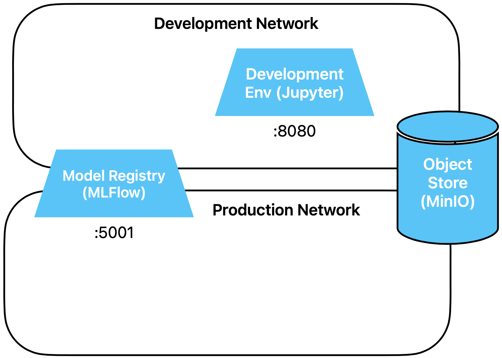

MLFlow Service
In this exercise, we will set up the MLFlow service.
Preparation
There is nothing to prepare this time.
Exercises
We are extending our infrastructure with MLFlow, which provides experiment tracking, a
deployment
API, and a model registry.
In the first exercise, we defined the two Docker networks development and
production. In which of these networks do we integrate MLFlow?
Suggested solution
Correct, in both of course. MLFlow must be available during development for logging
models, and during operation for retrieving ML models from the registry.
Take a look at the MLFlow compose file, which you will find under
exercises/containers/mlflow/
- Via which port can you access MLFlow?
- Where are the artifacts stored?
- Where are the metadata stored?
Suggested solution
You can find the answer in the command, ports, and volume directives in the compose
file:
command: mlflow server --host 0.0.0.0 --port 5001 --artifacts-destination s3://artifacts --backend-store-uri sqlite:///metadata/metadata.sqlite
ports:
- 5001:5001 # 5000 (mlflow default port) is taken by airplay on macos
volumes:
- ../../mlflow_metadata:/metadata
Now activate and start the MLFlow service.
Suggested solution
To do this, follow these five steps:
- Save all running notebooks
- Stop all containers: either with ctrl-c if the Docker process is running in
the foreground, or with docker compose down in the directory
exercises/, where the top-level file docker-compose.yml is
located.
- Uncomment the line with MLFlow in the top-level compose file:
include:
- docker_includes/networks.yml
- containers/objectstore/docker-compose.yml
- containers/development_env/docker-compose.yml
- containers/mlflow/docker-compose.yml
# - containers/event-streaming/docker-compose.yml
# - containers/monitoring/docker-compose.yml
- In the compose file of the development environment
(containers/development_env/docker-compose.yml), uncomment the
environment variable
MLFLOW_TRACKING_URI:
environment:
- FSSPEC_S3_KEY=${MINIO_ADMIN}
- FSSPEC_S3_SECRET=${MINIO_SECRET}
- FSSPEC_S3_ENDPOINT_URL=${MINIO_ENDPOINT}
- GIT_PYTHON_REFRESH=quiet
- MLFLOW_TRACKING_URI=http://model-registry:5001
- Start the containers again with docker-compose up or docker-compose
up -d
(the first time, this will take a moment until the image is loaded)
In codespaces, a message should appear that a new port has been opened. You can open the
just-started MLFlow service (model-registry) once to check. You will work with it
in the next exercise.
Our environment now looks like this:

Take another look at the MLFlow compose file. There is still something to do - can you
figure out what?
Suggested solution
MLFlow is started in the docker-compose.yml file with the following command:
command: mlflow server --host 0.0.0.0 --port 5001 --artifacts-destination
s3://artifacts --backend-store-uri sqlite:///metadata/metadata.sqlite
This bucket in the object store must be created manually. Everything below it
is then created and managed by MLFlow itself.
Create the bucket.
Suggested solution
import s3fs
s3fs.S3FileSystem().mkdir('/artifacts')
You can now proceed directly to the next exercise
10_A_simple_model_with_mlflow.html.